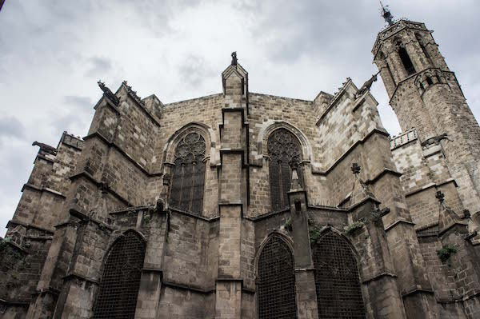

40˚ 46' 39.19" N
110˚ 22' 27.34" W
Els Països
Catalans
un any aquí
Plus an M.Sc. in bureaucratic hurdle jumping
Girona
Old stony streets and cathedrals / 40° 49' 55.59"N 110° 27' 19.48"W
A ways north of Barcelona, 45min on the high-speed AVE trains and an hour and a half on the regular Renfe regional trains, Girona holds an easily accessed glimpse of 'travel channel' Spain with jewish quarters, streets of cobble stones and old 15th century walls.
this is some stuff about stuff being stuff
Tossa de Mar
Coastal Castles and Sunsets / 40° 49' 55.59"N 110° 27' 19.48"W
More easily accessed by car from Barcelona than by train, Tossa is actually closer to Girona, (which is where budget airline Ryanair flies into 'Barcelona' actually) but Tossa is a gem in and of itself with a bustling downtown comprised of the requisite narrowly winding, cobbly ways and old structures adorning the crests of seaside hills.
While we were catching the sun set behind a thick marine layer, A local, who catches the sunset every day in an effort to capture an exceptional photo for a friendly competition among the other facebook-grouped locals, told me that in summer the streets of Tossa are overflowing with tourists and that September is the best time to go.

Montserrat Monastery
The Spain one, not the Caribbean island one / 40° 49' 55.59"N 110° 27' 19.48"W
Unlike the small Caribbean island nation which shares the same name, this Montserrat is an old monastery located not far North West from Barcelona, 45min by car but 1.5hrs by train, and it's worth getting here in time to see sunrise.
A fair bit of hiking can be undertaken here, including trails starting down at the bottom as well as plenty which start from the monastery. While a few of us were hiking around a pair of locals stopped to chat about where they'd hiked in from, and an older Catalan gentleman, machinegunning out in mixed spanish/catalan, recounted years of exploration of the place in vivid discription of the many trails and mountaineer refuges along the way.